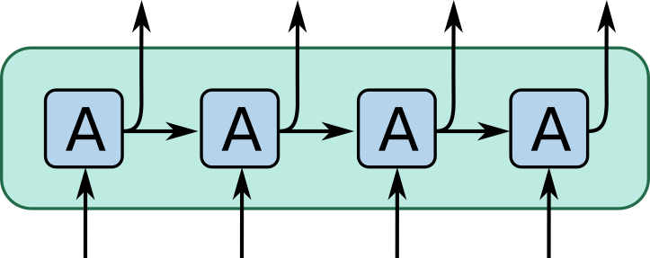
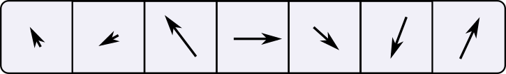
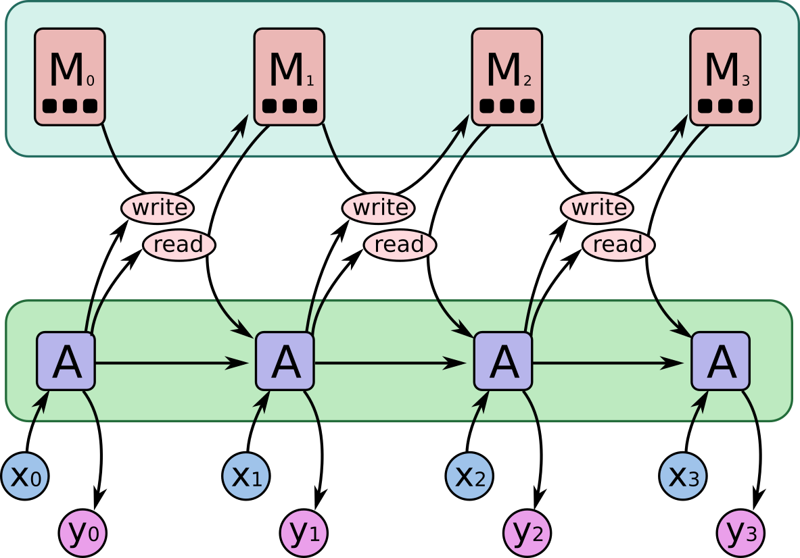
Somehow, where we read and write needs to be differentiable, so we can learn it.
Idea: read/write everywhere at once, but to different extents.
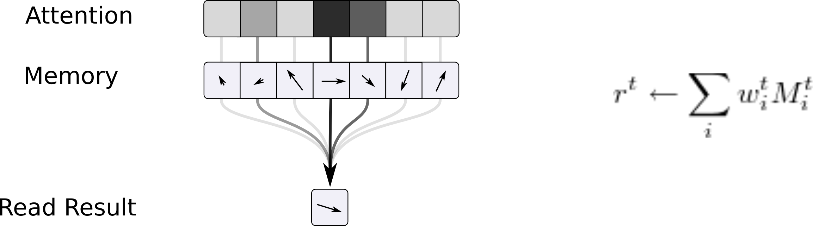
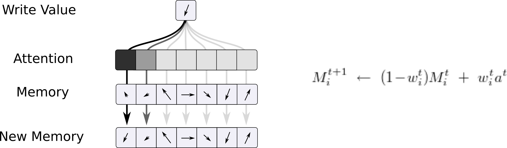
How to create the attention distribution?
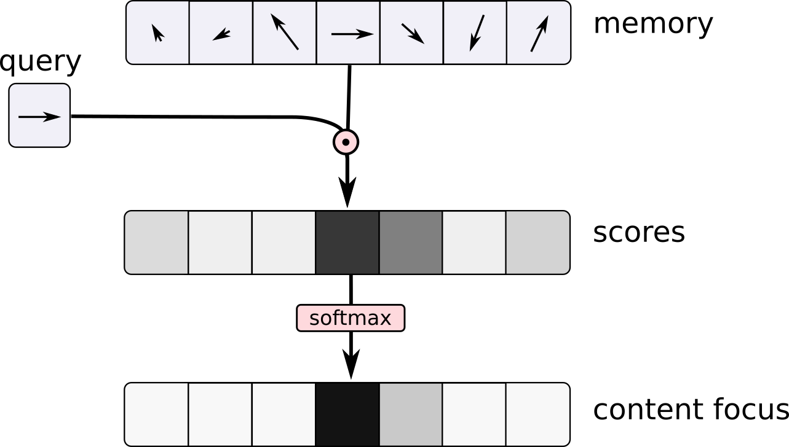
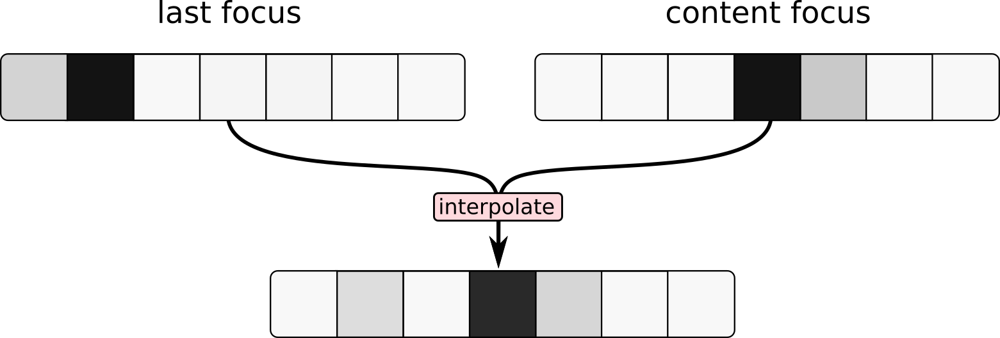
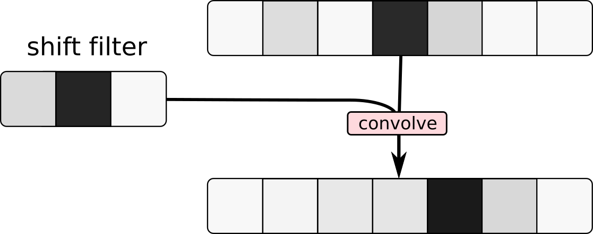
Putting the pieces together...
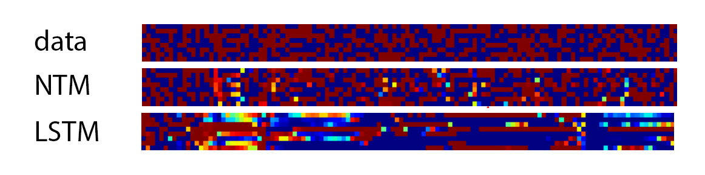
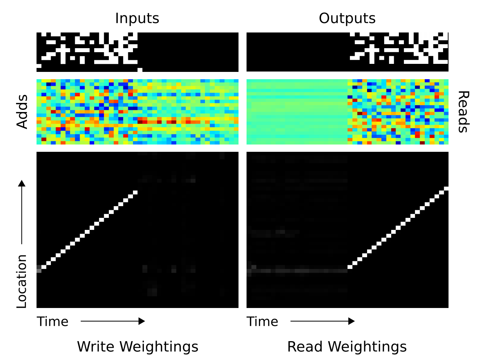
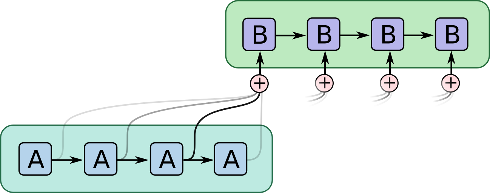
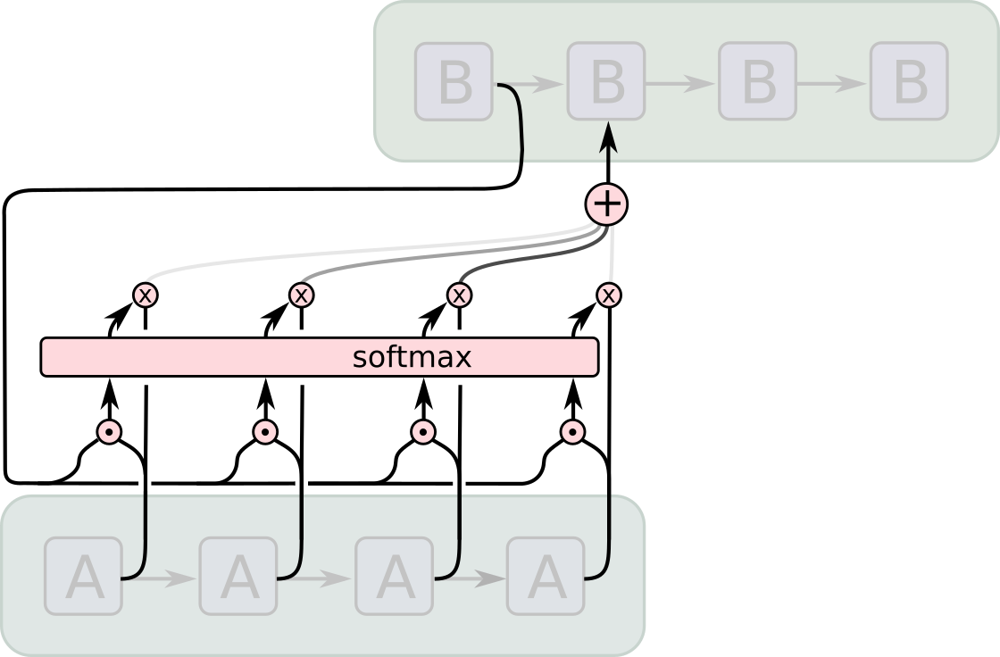
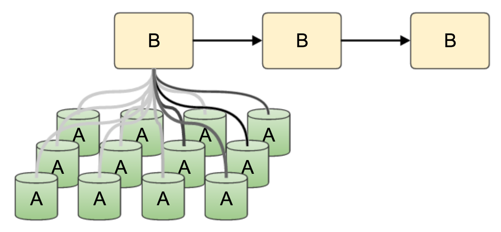
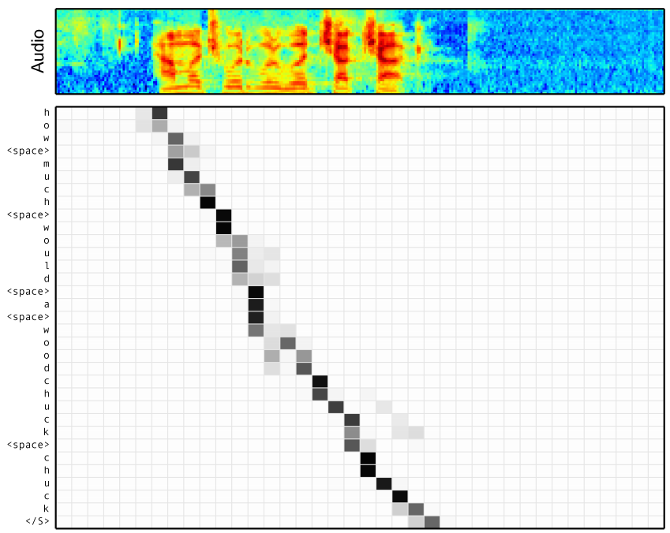
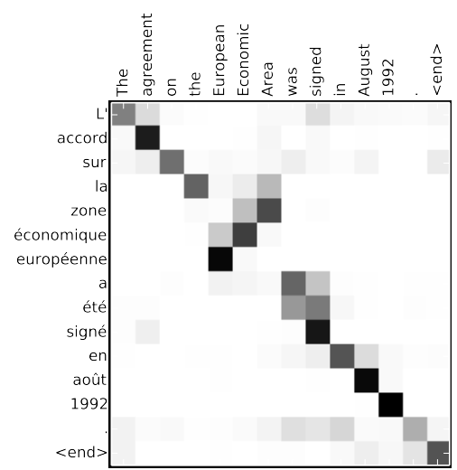
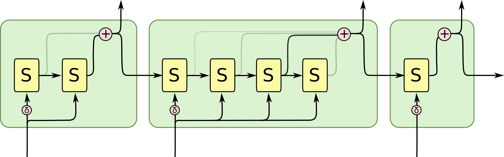
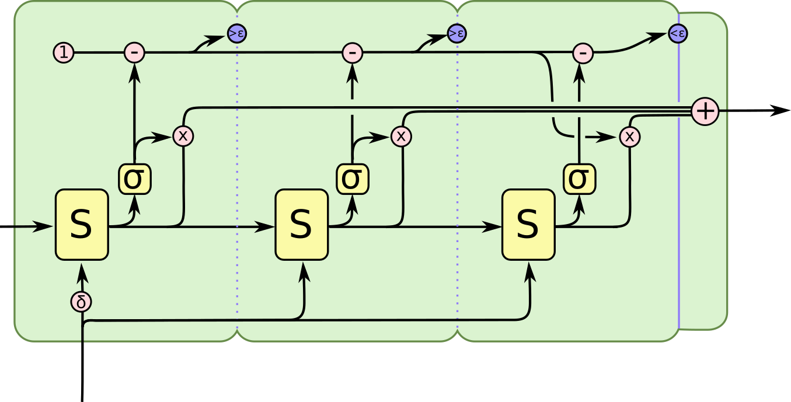
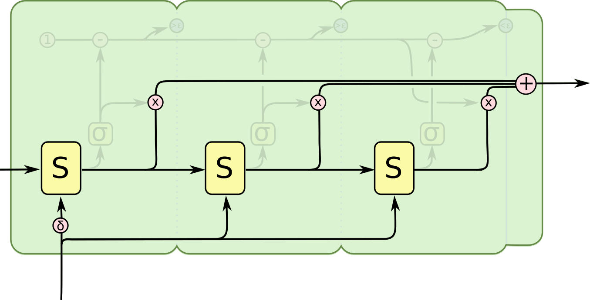
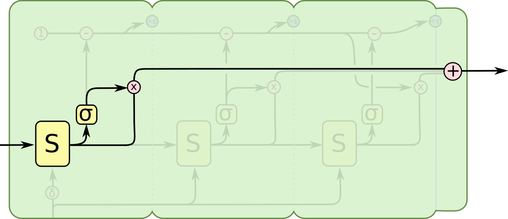
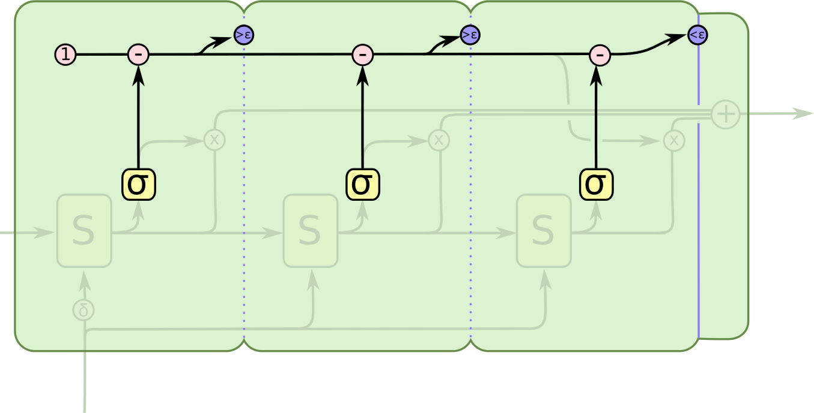
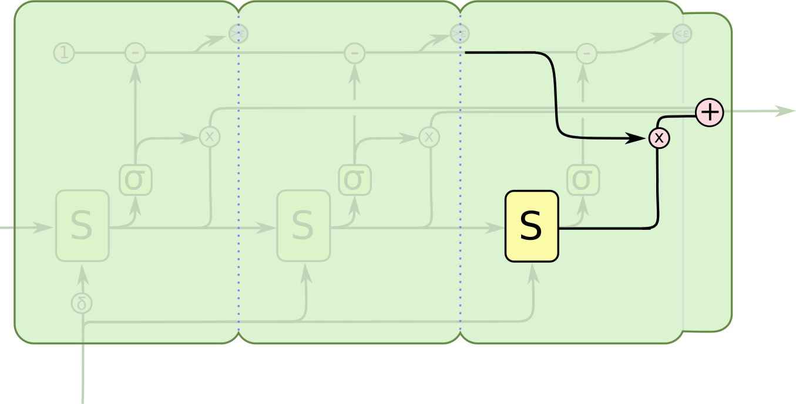
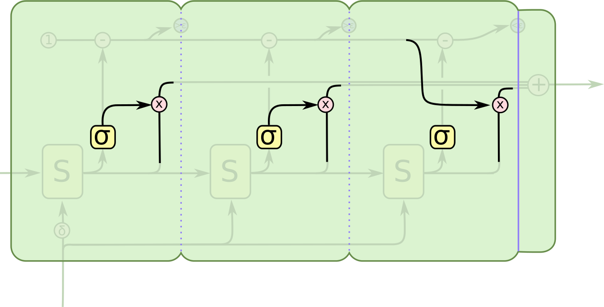
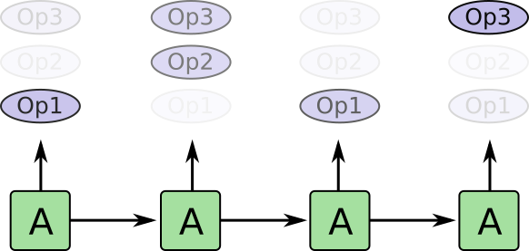
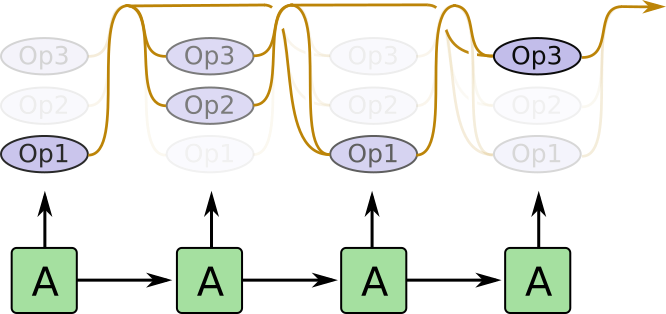